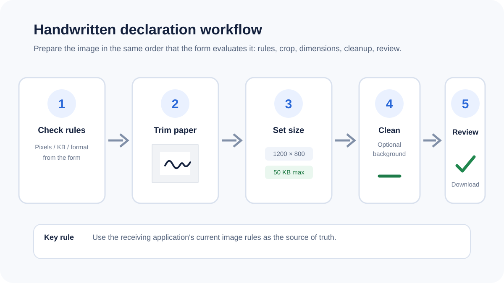
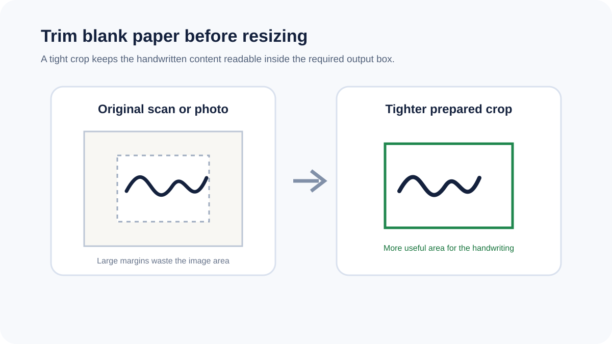

How to resize and compress a handwritten declaration for an online form
The receiving application controls the required dimensions and file size. A reliable workflow trims unused paper first, matches the requested canvas, cleans the background only when needed and then checks the final file.

Use the form's current requirements
There is no universal handwritten-declaration image specification. Different applications can require different pixel dimensions, physical dimensions, maximum bytes, image formats and background rules. The receiving form is the authoritative source.
Crop blank paper before resizing

Phone photos and scans commonly include large blank margins. Trimming those margins gives the handwriting more useful space in the final image and can reduce the number of pixels that need to be compressed.
Be careful with background cleanup
Near-white removal can reduce shadows or paper texture, but faint handwriting can also be affected. Use it only when useful and inspect the prepared preview before submitting the result.
Set dimensions before targeting file size
Choose the required dimensions first, then apply the file-size limit. A maximum-size target is a practical goal rather than a promise of an exact byte count, because image complexity affects compression.
Choose a compatible format
JPG is a compact option for ordinary form uploads. PNG can preserve transparency and crisp edges but may be larger. WebP can be smaller when accepted by the receiving system. Follow the format requirement of the form.
Review the writing at 100%
Before submission, check that every handwritten character, punctuation mark and underline is still readable. A smaller file is not useful if compression or cleanup has removed part of the declaration.
Privacy
Handwritten declaration images can contain personal information. Supported images are processed locally in the browser in this workflow, so the source file does not need to be uploaded to a conversion server.